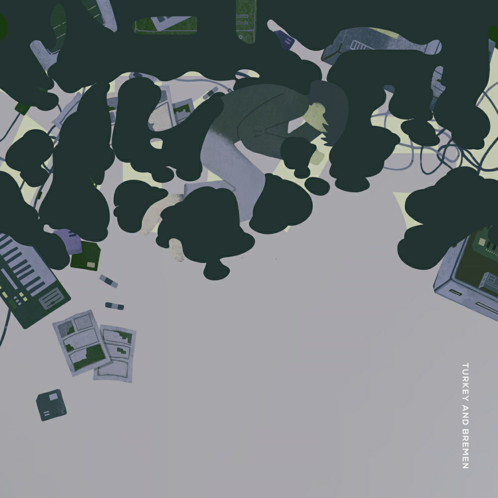

含泪推荐Turkey And Bremen(理一老师)的新len专**“泥河”,**从《Wanderer》开始，到《天文学者》，再到《one room》，再到《春作》。理一老师的歌总是能勾起我心中那些隐秘的梦想和渴望。
装作大人的样子地走到今天，挣扎于随着成长愈发现实与艰难的世界，深埋着难以被人理解的孤寂和忧伤，怀揣着渴望被爱的心跌跌撞撞地成长，不知不觉就真的成为了大人的自己，在深夜中还是忍不住做起关于小时候、星空与月的梦。
这张专带给我的慰藉无以言表，多少个难眠的夜晚，就好像在静静地听着自己的故事而入睡。
真的真的希望各位v家圈的朋友了解一下这位国产宝藏p主理一老师和这个国产宝藏组合。如果能了解一下新专就更好了！
下附我特别喜欢的理一老师的曲子和一句话简介。
①专辑试听《泥河》BV1Y5411w7H3
裝作大人的樣子走到今天，不知不覺就真的成為了大人。
②《Wanderer》BV1gt411F7kb
我們在國境線上立起一面旗子。
③《天文学者》BV1b7411r7iH
我們緊緊捧著參與獎作為證據。
④《one room》BV1RC4y1a7F3
房間偷偷藏滿了破銅爛鐵的鐵鏽味。
⑤《春作》BV1L64y1Q72J
我們虛張聲勢地製造苦惱。